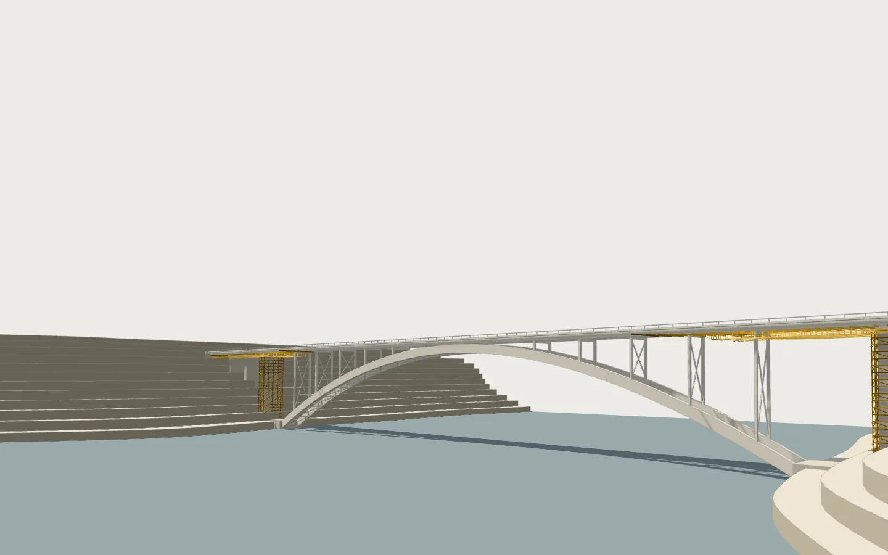
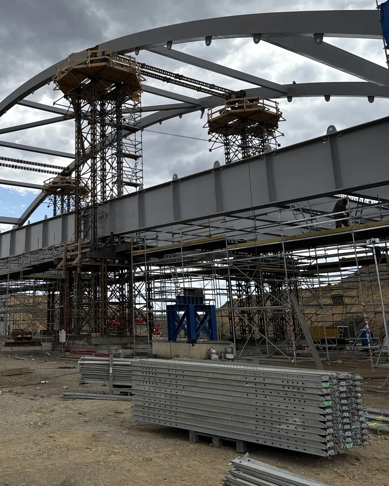
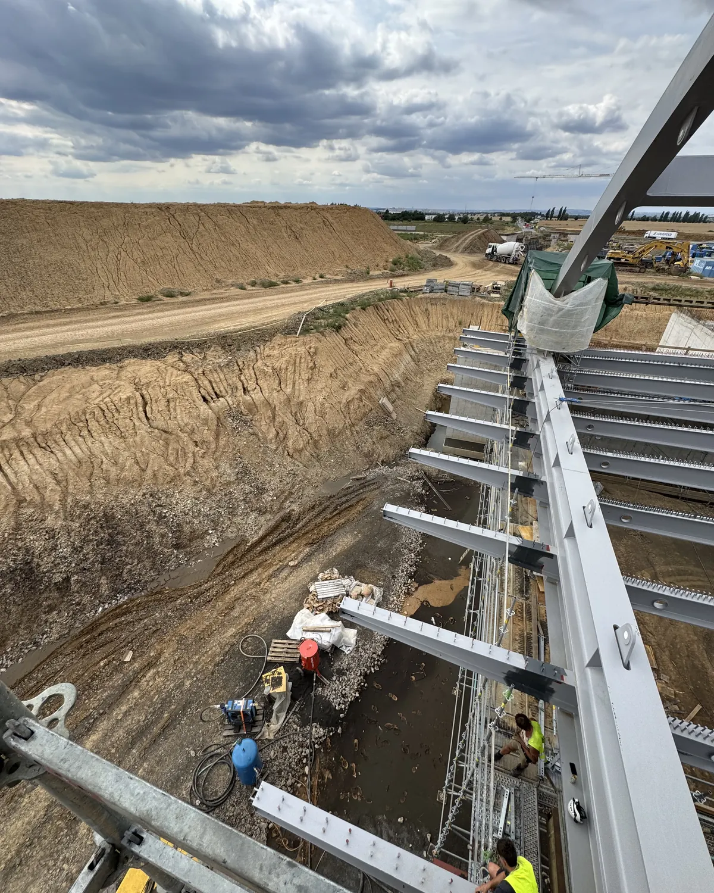

01 · Mosty
543 m
Žďákovský most
Ocelový obloukový most přes Orlickou nádrž. Mostovka je zhruba 50 metrů nad hladinou a pod většinou mostu je voda. Lešení ze země tu všude postavit nejde.
Neoficiální koncept · MALUS/01

Nosník vlastní konstrukce Závěsy Pracovní podlaha Věž z PERI UPAnimace: 3D model Žďákovského mostu. Při načtení vyroste lešení kolem pilířů a začne se stavět zavěšené lešení pod mostovkou. Při scrollování se kamera přesouvá k jednotlivým částem a lešení se dostaví.
Lešenáři z Prahy · Česko a Slovensko
Specialisté na mosty a zavěšené lešení na vlastní konstrukci. Na každé zakázce stavíme rychle, hlavně z PERI.
01 · Mosty
543 m
Ocelový obloukový most přes Orlickou nádrž. Mostovka je zhruba 50 metrů nad hladinou a pod většinou mostu je voda. Lešení ze země tu všude postavit nejde.
Naše specialita
Máme vlastní konstrukci vyrobenou na míru. Zavěsíme ji přímo pod mostovku a pracovní podlaha pak visí nad vodou i nad provozem. Ze země nepotřebuje žádnou oporu.
Scrollujte, lešení se pod mostem dostaví
Od paty pilíře
Kolem pilířů stavíme věže z PERI UP. Slouží jako přístup k nosné konstrukci i jako podpěra. Jedna logika dílů od paty pilíře po podlahu pod mostem.
Rychlost montáže
Ať jde o most, fasádu, podpěry pod stropy, nebo festivalovou stage, lešení stavíme rychle. Montáž plánujeme tak, aby stálo, když ho stavba potřebuje.


02 · Kampus
Kampus České spořitelny · Smíchov City
Na Smíchově vzniká nové sídlo České spořitelny. Stavíme tu podpěrné konstrukce pod stropy i fasádní lešení.
Smíchov City je podle developera největší výstavba v Praze od dob Vinohrad.
03 · Festivaly
Konstrukce pro festivaly v Česku i na Slovensku. Scrollujte a stage se postaví.
Animace: při scrollování se z lešení postaví festivalová stage. Nejdřív podlaha pódia, potom věže, zadní stěna, střecha a PA křídla. Nakonec se rozsvítí světla a LED stěna.
Podlaha pódia
Nosná konstrukce pódia z modulového lešení. Výšku srovnají stavitelné patky.
Věže a střecha
Věže, zadní stěna a střešní nosníky. K tomu PA křídla pro reproduktory a LED obrazovky.
Hotovo
Stage, tribuny i VIP terasy předáváme v termínu festivalu.
Stavěli jsme pro6 festivalů · Česko a Slovensko
Ze stavby
04 · Zakázky
Rozetový uzel · ilustrace · otočte tažením
Většinu zakázek stavíme z modulového systému PERI UP. Když to stavba potřebuje, postavíme i HAKI a další systémy.
05 · Mapa
Mosty, stavby, festivaly i filmové natáčení. Stavíme po celé ČR a na Slovensku.
06 · Kontakt
Vyberte, co stavíme, nastavte rozměry a poptávku nám pošlete. Model i text se skládají s vámi.
Vizitka
Pošlete fotky nebo výkresy a napište, kdy potřebujete začít. Stavíme po celé ČR a na Slovensku.
GOLD Institute
Lešení · mosty · zavěšené konstrukce